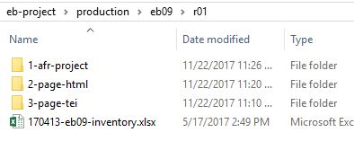

Section Folders
The three types of data stored in the section folders.
Each print edition section folder (r01, r02, r03, … ) contains folders for the different types of production files we generate, preceded by a numeral that reflects their position in the production sequence.
Figure: Print edition section folder
